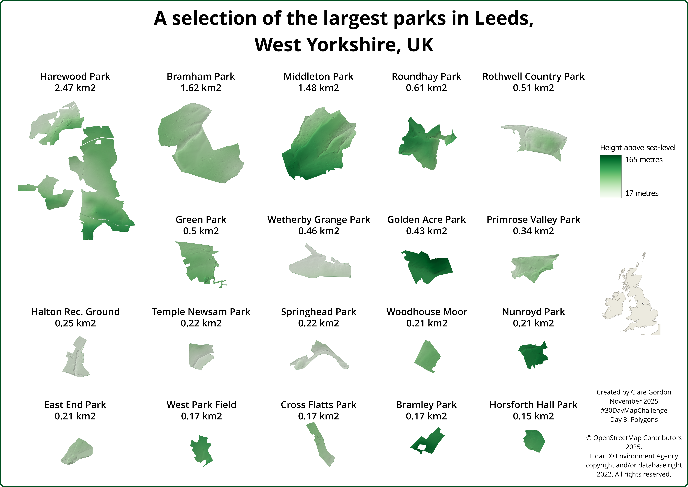

Polygons
Largest Parks in Leeds
Which parks are the largest in Leeds? Elevation adds detail.

Data
- OpenStreetMap data for parks within Leeds downloaded via QuickOSM plugin.
- Environment Agency Lidar data - 2m DSM composite
- Attribution statement: © Environment Agency copyright and/or database right 2022. All rights reserved. Open Government Licence.
What did I learn?
- Refreshed myself on how to use an atlas layout in QGIS.
What could I do differently or want to find out?
- Would have been useful to take more time with the layout.
Process (more detail about how I made the map)
Preparing park outlines
- QGIS QuickOSM plugin to download polygons for parks within Leeds -
leisure = park.
- Only including those with names using
Select by expression - "name" IS NULL. Toggle editing and delete unnamed polygons.
- Export results to GeoPackage with CRS = EPSG:27700 (British National Grid).
- Use OSMInfo plugin to get Leeds boundary polygon and again, export as EPSG:27700.
- Add area field to parks table - Field calculator:
round($area / 1000, 2)
- Select parks with an area of over 150 km2 -
Select by expression - $area > 150000 and save to a new layer.
Preparing Lidar data
- Download and merge the tiles of 2m DTM.
- In QGIS -
Clip raster by mask layer using the large parks layer as the mask.
- Style the DTM in green colour ramp.
- Duplicate the DTM layer and style duplicate as hillshade. Put above DTM and use
Multiply blending mode plus a little opacity. Set Resampling to Cubic for smoother effect.
Exporting park images
- Using Atlas layout in QGIS.
- Export each page as an image, setting output file names to name and area attributes.
Layout with Inkscape
- Import all images and layout as required before exporting as png.